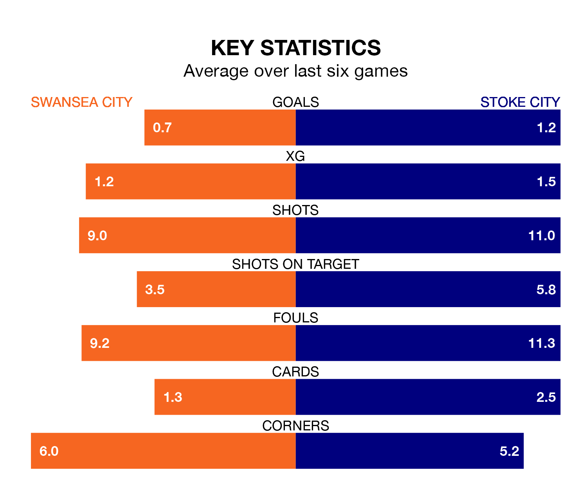

Swansea City host Stoke City on Wednesday at the Swansea.com Stadium in EFL Championship.
In their last league match, on Saturday, Swansea lost to Middlesbrough 2-0 away.
Stoke drew, 2-2 at home against West Bromwich Albion, with André Vidigal and Million Manhoef on the scoresheet.
In the last 10 years, Swansea and Stoke have played each other on 19 occasions. Swansea won five of them, Stoke 11, and they drew three times.
On average, the Swans scored 1.2 goals and the Potters 1.6 in those matches.
Their last meeting was on December 12, when they played out a 1-1 draw.
Swansea are in disappointing form in EFL Championship, with one win and two draws from their last six games.
With two wins and two draws over that period, Stoke's form is better – they have taken eight points from 18, compared to Swansea City's five.
Stoke City are 18th in the table after 41 games, of which they have won 12 and drawn 10, earning 46 points.
The Swans are three places ahead of the Potters in 15th, with 12 wins and 11 draws putting them on 47 points.
With 40 goals in 41 games so far this season, the away side are scoring at below the league average rate with 1.0 goals per game. And they are conceding more than average, letting in 56 goals at a rate of 1.4 per game.
The hosts are also below average scorers, with 1.2 goals per game, compared to a league average of 1.3. They have conceded 1.5 goals per game.
Wednesday's match will be refereed by Keith Stroud, who has taken charge of 21 EFL Championship games so far this season, issuing two red cards and booking 103 players. He has awarded two penalties.
The last Swansea game Stroud refereed was a 2-1 away win against Sunderland on February 24. His last Stoke match was their 1-0 win away at Rotherham United on January 13.
Updated: 11:20 (UTC), 09/04/24